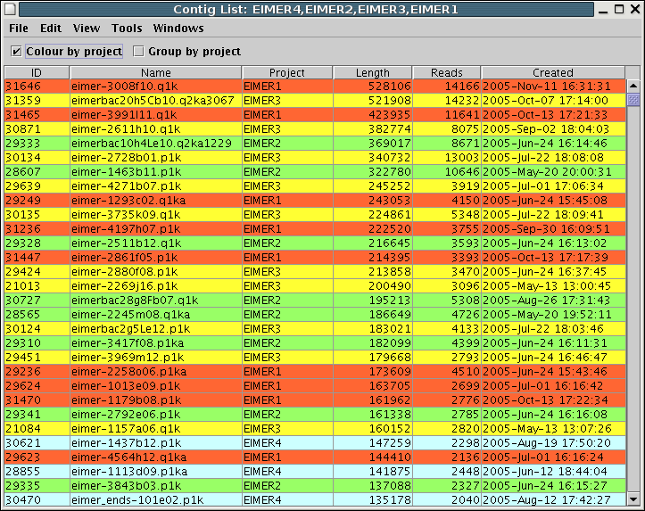
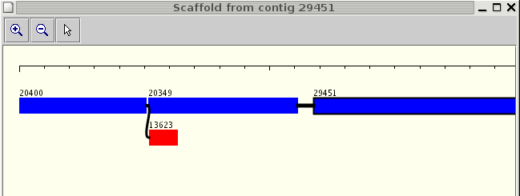
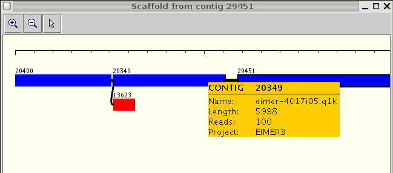
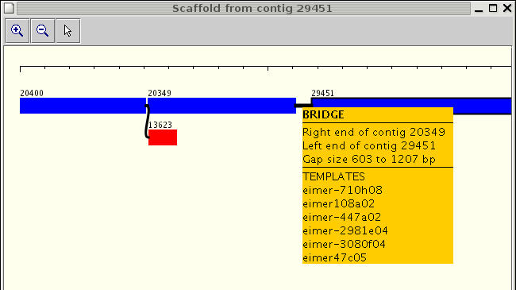
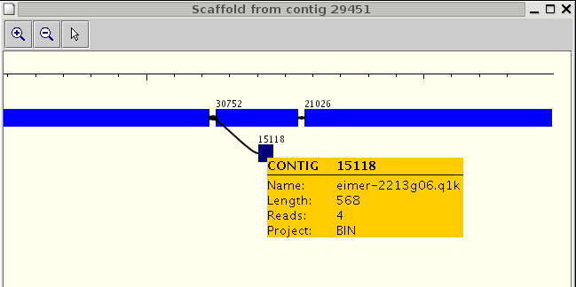
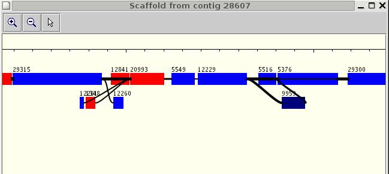
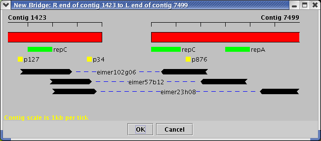

A preview of the Arcturus user interface
The alpha-test version of the Arcturus core system is now being used in
support of Eimeria finishing and to assist in pre-finishing work on
several other pathogen genomes.
A graphical user interface is an essential tool to help finishers and
project managers to visualise the state of an assembly. The following
screen-shots illustrate the key features of a preliminary user
interface.
Contig list

Basic information about all contigs in one or more projects is
displayed in tabular format. The table can be sorted by contig length,
number of reads and contig creation date. If two or more projects are
displayed, each row is colour-coded to indicate which project the
contig belongs to.
Contig scaffolds
Arcturus allows the user to construct a scaffold dynamically from a
specified seed contig. Contigs in a scaffold are linked by one or more
pUC bridges. Even in a large pathogen database such as Eimeria, it
takes only a few seconds to construct a scaffold. The basic display
looks like this.

Contigs are drawn as coloured bars. They are joined by black lines
which represent the pUC bridges. The thicker the line, the more
sub-clones contribute to the bridge, and the more reliable it is.
Red and blue are used to denote the orientation of the contig in the
scaffold. Red denotes a reversed contig, blue a contig oriented in the
forward sense. In the example above, contig 13623 is reversed relative
to the other contigs.
The seed contig is denoted by a black border. Contig 29451 was the seed
contig in this example.
Some contigs links to more than one neighbour, as the example above
shows. Contig 20400 has pUC bridges to two contigs, 20349 and 13623.
The user can call up more detailed information on any contig in the
display by clicking on it. This brings up an information box:

The user can also bring up detailed information about a pUC bridge by
clicking on it:

Bright colours show that the contig belongs to the same project as the
seed contig. A darker shade of red or blue denotes a contig which
belongs to a different project. In the example below, contig 15118 does
not belong to the same project as the others.

Sometimes, the links between contigs can become quite complex. The
example below shows a tangle of interlinked contigs.

pUC bridge details
When a finisher wishes to look more closely at the details of a pUC
bridge between two contigs, a view such as the mock-up below may be
useful:

This shows the positions of the reads which make up the bridge,
together with other relevant details such as the positions of repeats
and oligos.
Linking Arcturus and Gap4
It is anticipated that the finisher will be able to select a group of
contigs from the scaffold display and send them to Gap4. When the Gap4
session ends, Arcturus will capture the new set of contigs, import them
into the database and refresh the scaffold display.
However, there are a number of technical issues which need to be
solved. Closer integration between Arcturus and Gap4, avoiding the need
to use a CAF file as an intermediate stage, would greatly simplify this.